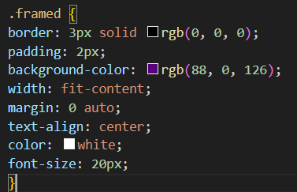
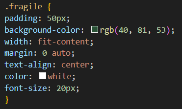

What is a Margin?
Think of an HTML element like a box. So you would have your content (words or an image e.g) in your website, you could add a padding around it which would create space between your content and border. You can add a border if you want your content to stick out giving it a frame. Now this is where we get to the margin, the margin is the space between your framed or non-framed content and the walls of the website. Margins allow you to make you website look nice and neat creating even spacing between your content so it doesn't look too compact and messy.

Above is the code I used to create an element using margins. I decided to create a class called 'spaced' I applied this class to the element above in my html file and picked dimensions in pixels in my CSS file to arrange the element and I positioned it where I was satisfied using the margin command.
What is a Border?
Borders much like it's name is just a frame surrounding your content to make it stand out. Similar to having a frame around a photo or poster. Your frame could thick or thin, solid or dashed, even straight or curved edged. You can make them however you want, different colored borders with different colored backgrounds.

Above is my code I used to create a border around the sentence. I created a class called 'framed' and gave attributes of a solid 3px black border, slight padding and a subtle background colour to make the text more visible. I also gave it a width attribute to fit the content so it doesn't stretch over the page taking unnecessary space, as well as a 0 auto margin to help the text-align center command to put the text in the center and keep everything neat.
What is Padding?
Padding is also much like it's name, if you think it as placing an order online and it's fragile, so when your order is being packaged they will give it some padding to help create space and cushion your order and then you can place it in a border to seal it in and keep it safe if you want or you could just use a lot of padding too!

Above is the code I used to create padding around my sentence to give it space. I created a class called 'fragile' and gave it the same attributions as my previous classes in terms of positioning, font size and colour. Otherwise I gave it a bigger padding compared to the rest of my elements, I gave it a different background colour and didn't include any borders.